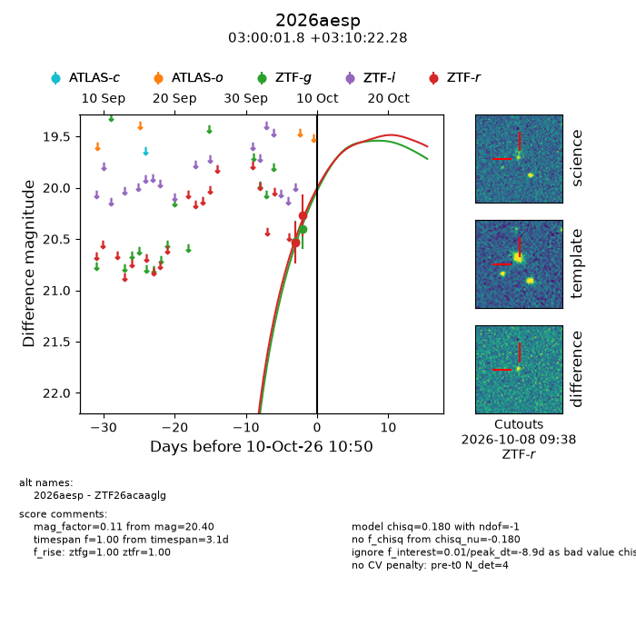
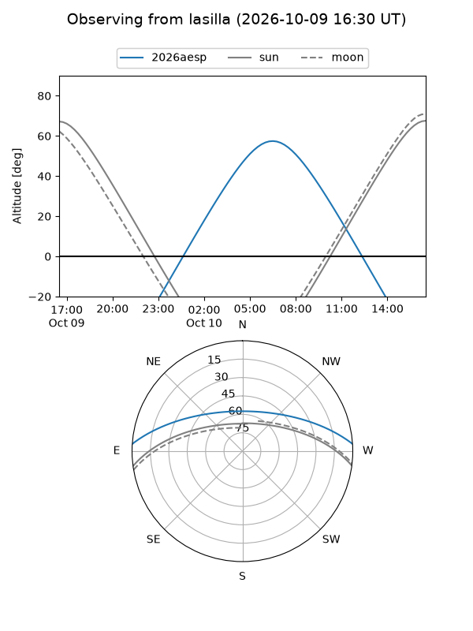
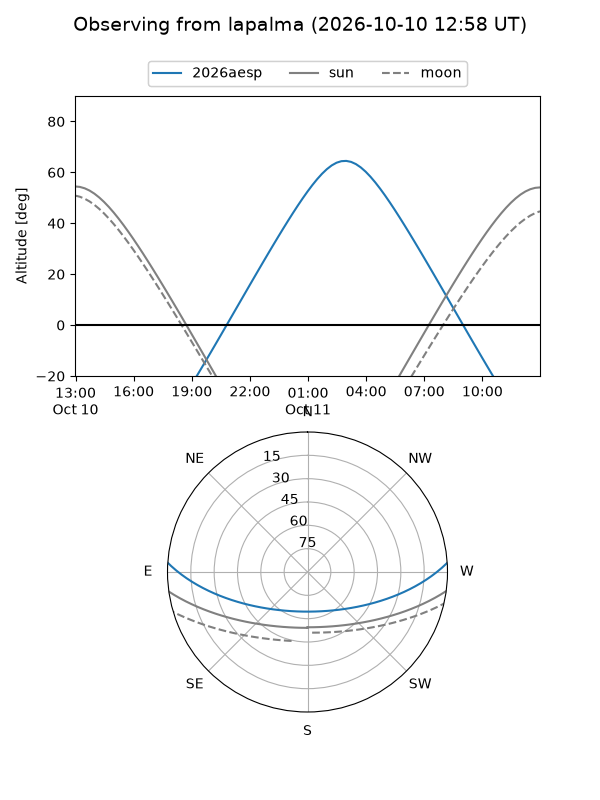
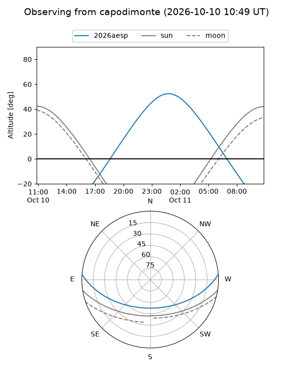
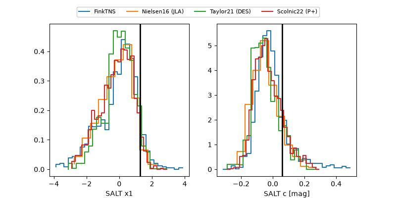

2026aesp
Target 2026aesp at 2026-10-10 10:51
Aliases and brokers:
FINK-ZTF: ztf.fink-portal.org/ZTF26acaaglg
Lasair-ZTF: lasair-ztf.lsst.ac.uk/objects/ZTF26acaaglg
ALeRCE-ZTF: alerce.online/object/ZTF26acaaglg
YSE-PZ: ziggy.ucolick.org/yse/transient_detail/2026aesp
TNS name: wis-tns.org/object/2026aesp
Direct TNS query: direct search
alt names
ZTF26acaaglg (ztf,fink_ztf)
2026aesp (tns,yse)
Coordinates:
equatorial (ra, dec) = 45.0073,+3.17286
equatorial (HMS+DMS) = 03:00:01.76,+03:10:22.28
galactic (l, b) = (173.6395,-46.64716)
Flags:
peak dt: -8.9
Photometry:
last ztfg=20.40, ztfr=20.27
2 ztfg, 2 ztfr detections
Lightcurve

Visibility



Additional plots
